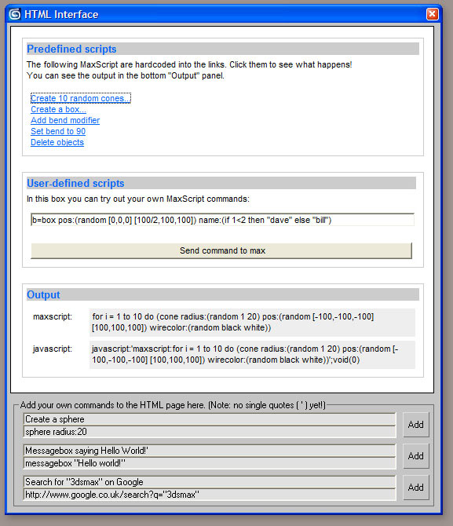

Description
Provides methods to run max commands from an ActiveX HTML page.
Also, provides simple methods to write back to the page.
Example uses:
- Run MaxScript commands as part of a help system
- Build a custom UI using HTML / JavaScript
Note: documentation is temporary and will be updated soon!
Demo UI

Functions
This is just a base set of functions. I hope to add more soon.
| parseUrl | Parse and run the max command from the web page |
| addMaxLink |
Add a MaxScript link to the web page |
| addHtmlLink | Add a normal HTML link to the web page |
| setBgColor |
Set the background color of the page to the max UI color |
Download & Installation
Download MaxHtml.zip
MaxHtml is a struct (function library) in conjunction with a JavaScript library. It is designed for programmers to use within their scripts.
Basic implementation goes like this:
HTML
- Include maxHtml.js in your HTML
- Construct your HTML links correctly, e.g. <a href="javascript:maxCmd('render()')">render</a>
3dsMax
- Include maxHtml.ms in your MaxScript
- Set up the ActiveX browser control to display your html page
- Use the control's BeforeNavigate2 event to intercept the links in the web page
- Pass the url along to the maxHtml struct like so: maxHtml.parseUrl url
Explore the demo to see how things work. Be sure to change the path in the top of the demo.ms file to point to towards the html demo file!
Bugs and Feedback
Email me here